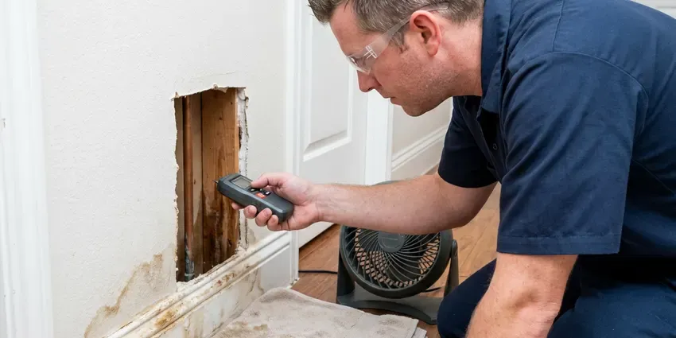

Water Softener Maintenance in Harrisburg, SD
Fleck, Clack, Autotrol or a big-box unit from the garage, HWR Plumbing works on most softener valves in Harrisburg, SD.
- Resin Rebedding Available
- Free Water Hardness Check
- Work Backed in Writing
- Licensed Plumbers

Get Your Softener Regenerating Again in Harrisburg, SD.
HWR Plumbing gives you a flat price before any parts come out of the truck.
Experienced Water Softener Maintenance in Harrisburg, SD
HWR Plumbing maintains water softeners across Harrisburg, SD. Hard water is the norm across much of South Dakota, and many groundwater sources carry dissolved minerals like calcium, magnesium, sulfate and iron. Every visit starts with two hardness readings, one at the raw water and one at a softened tap. That tells us in about five minutes whether the softener is doing its job.
Work we handle every week:
- Control Head Servicing
- Brine Well and Float Inspection
- Valve seal lubrication and program checks

Additional Plumbing Maintenance Services in Harrisburg, SD
Our maintenance and specialty plumbing services in Harrisburg, SD protect your home year-round and extend the life of every system.


Customers
Why Choose HWR Plumbing for Water Softener Maintenance in Harrisburg, SD?
Softeners rarely fail all at once. The resin fouls and the injector narrows, so capacity slips a bit every year. By the time you notice stiff towels and spotty glasses, the unit may have been running at half strength for a long while.
- Steady Results, Water should test soft at the end of each cycle, not just after it.
- Softer Water, You feel it in the shower, and soap actually lathers.
- Early Warnings, We spot a cracked brine tank or a leaking bypass valve before it floods the floor.
Citywide Coverage
Softeners put in by another company are fine with us anywhere in Harrisburg. Nobody needs to dig up the original installer's paperwork. A model number or a photo of the valve head is enough for us to bring the right seal kit, and most of those parts ride on the truck already.
Experienced Team
Years on Culligan, Kinetico, EcoWater and Pentair units have taught our crew the quirks of each control valve, including which ones need dealer parts. Kinetico twin tanks run on water pressure, not electricity. That changes how we troubleshoot them.
Safety-First Approach
Before we open a valve, the water to the softener goes to bypass and pressure gets relieved at a faucet. That keeps the room dry when the piston comes out. Drop cloths go down first.
Trusted Certified Harrisburg Plumbing Services Professionals
At HWR Plumbing, we take pride in licensed, certified plumbing services throughout Harrisburg, SD. Credentials matter in this trade. Every repair, install and maintenance visit follows strict safety and quality rules, and the plumbers doing the work carry recognized industry credentials.
Call Us Now PHCC Plumbing Contractor Recognition
PHCC Plumbing Contractor Recognition Better Business Bureau (BBB) Accreditation
Better Business Bureau (BBB) Accreditation Angi Certified Pro
Angi Certified Pro ISO 9001 Quality Management Certification
ISO 9001 Quality Management CertificationWater Softener Maintenance Work We Do in Harrisburg, SD
Control Valve Diagnostics and Repair in Harrisburg
Leaks at the valve body, water running to drain around the clock, a motor that hums without moving or a display stuck on one cycle tend to mean the seal and spacer stack is worn out. On a Fleck 5600 the fix is a piston and seal kit swap, often done in under an hour without pulling the valve off the tank. Cheaper than a new head.

Regeneration Programming and Hardness Testing in Harrisburg, SD
Plenty of softeners still run factory settings. The installer never changed them, or the household grew and nobody updated the valve. We enter your raw hardness and household size, then set a metered valve to regenerate by gallons used rather than on a fixed timer schedule.
Softener Upkeep for Restaurants and Shops in Harrisburg
Ice machines, espresso machines, dish machines and boilers all scale up fast on hard water, and equipment warranties often require treated water. We test hardness on every visit and log it for your records. Brine tank cleanouts happen more often on commercial units.
Resin Cleaning and Regeneration Tuning in Harrisburg, SD
Iron is the most common resin fouler we see. The beads turn rusty brown and stop grabbing hardness. We feed a resin cleaner through the brine well, run a regeneration and retest, and if the capacity comes back we shorten the time between regenerations so the iron does not build back up.
Commercial Softener Service in Harrisburg
Commercial units work harder. Restaurants and laundromats can burn through a softener's capacity in a single day, so a twin-tank system keeps one tank online while the other recharges. We set visits around your business hours so the water never goes hard during a rush.
Commercial Twin-Tank Maintenance in Harrisburg
Salons, car washes, hotels and restaurants put far more gallons through a softener than any house does, and a hard-water day can mean spotted glassware or a scaled ice machine. On twin-tank and progressive-flow units, we spend extra time on the meter and the tank switching. Visits run monthly or quarterly, depending on volume.
Service for Most Softener Brands in Harrisburg, SD
Culligan, Kinetico, EcoWater, Morton and the store brands all use different valves, and parts for some of them only come through the dealer. Seal kits for the common valves ride on the truck. For a proprietary unit, you hear up front whether a part needs to be ordered and how long it usually takes.

Control Valve and Injector Cleaning in Harrisburg, SD
Brine draw depends on a venturi injector, a tiny nozzle and throat that pulls brine out of the salt tank as water rushes past. It does not take much debris to block it. We pull the injector and screen, clean them, and replace the seals and spacers on valves like the Fleck 5600 and Clack WS1 if they are worn.
Softener Service Near Me in Harrisburg, SD
Our plumbers work in the Harrisburg area every weekday, so a softener call usually gets on the schedule within a day or two. We often have same-day openings. A leaking brine tank or a valve stuck in backwash gets moved up the list.
Being local cuts the wait on a leaking softener from days to hours. Overnight, a split brine tank or a valve stuck draining can flood a garage floor. The bypass handle cuts off its water supply.
HWR Plumbing at a Glance
- Fully licensed plumbing team covering Harrisburg, SD
- Same-day appointments and 24/7 emergency response
- Clear written estimates, no hidden fees
- 4.8-star rated by 304+ South Dakota customers
Harrisburg Map
Harrisburg Information
- Population
- 9,435
- Area codes
- Local
- Service area
- Harrisburg and communities within 40 miles
- Nearby
- Tea, Sioux Falls, Brandon, Madison
A softener that stops regenerating still looks normal from the outside, so homes in Harrisburg, SD can go months on hard water without anyone catching it.
Expert Services
Call HWR Plumbing for reliable plumbing work done by licensed pros in Harrisburg, SD.
Our Specialized Plumbing Services in Harrisburg, SD
At HWR Plumbing, you get every kind of plumbing service from one company across Harrisburg, SD. We go from leak detection all the way to full system installations, for homes and commercial buildings, and we do it quickly at a fair price. Here are the core services we offer:


How a Water Softener Maintenance Visit Works in Harrisburg, SD
Here is what happens from the phone call to the final hardness test.
Call for a Price
Call (605) 480-9736 with the brand and age of the softener if you know them. You get a flat price and a time that suits you.
Test and Clean
We test hardness, clean the brine tank and pull and clean the injector and valve screens. Resin and bypass get checked too.
Set and Verify
Regeneration gets programmed to your water and usage, followed by a manual cycle. A final hardness test shows the water is soft.
Frequently Asked Questions About Water Softener Maintenance in Harrisburg
Figure on $100 to $250. The unit's age and the parts it needs move the price within that range, and a proprietary valve can add a day for parts. With the brand and model, HWR Plumbing can usually give you a firm number over the phone.
In our experience, yes. Clean injectors and fresh seals keep the valve from straining through every regeneration. Resin that gets cleaned when it fouls, instead of years later, can stay in service well past the 10-year mark, and the valve body usually outlasts it.
Most visits run about an hour, including both hardness tests and a manual regeneration. Rebedding the resin tank tacks on about an hour more.
At least once a year. Twice a year makes sense for very hard water or a busy household. The resin and injector last longer when grit and sludge get cleared regularly, and the salt dose stays matched to what the house actually uses.
Maintenance does not lengthen the warranty, but skipping it can void one. Many manufacturers require proof of proper care, including correct salt and setup, before they will cover a failed valve or a cracked tank. Keep the service invoices.
About an hour for a unit in decent shape. Add time for a packed brine tank or a valve rebuild. Surprises do happen, like a cracked distributor tube that shows up as resin beads in the faucet aerators, and those can turn a one-hour call into a second visit.
Generally, servicing an existing softener does not require a permit. Replacing the whole system or changing the plumbing around it can, based on what the local building department requires, and we handle that paperwork when it applies.
Yearly suits most households. Very hard water or heavy daily use can justify a visit every six to nine months.
What Our Customers Say About Our Plumbing Experts

Paul B.
Our pit pump ran nonstop even in dry weather. The plumber found the check valve was stuck open, so the same water kept cycling back into the pit. New valve, new float switch, done in an hour. It runs quiet now.
Sump Pump · Yankton, SD
Karen W.
After our third pinhole leak in copper, we stopped patching. HWR Plumbing gave us a written plan room by room and repiped the house in PEX while we stayed in it. The crew covered our floors every morning and cleaned up every night.
Repiping · Madison, SD
Daniel K.
A pipe burst in the garage ceiling at 11 at night. Someone answered on the second ring, and the plumber was in my driveway about fifty minutes later. He shut off the main, cut out the split section, and had water back on before 2 am.
Emergency Plumbing · Yankton, SDMark T.
The floor drain in our office break room backed up every few weeks. The plumber ran a cable, then put a camera down and found roots at a joint about thirty feet out. Seeing it on the screen made the decision easy.
Drain Cleaning · Yankton, SD
Laura S.
Our 40 gallon tank started leaking from the bottom after thirteen years. The tech hauled the old one out, set a new unit with a fresh expansion tank, and had hot water running in about four hours. He took the old tank with him too.
Water Heater Replacement · Vermillion, SDPatricia H.
We had a slab leak that two other companies could not find. HWR Plumbing located it in under an hour with a listening device. They rerouted the line through the attic instead of breaking up the floor, so we kept our kitchen tile.
Slab Leak Repair · Harrisburg, SD